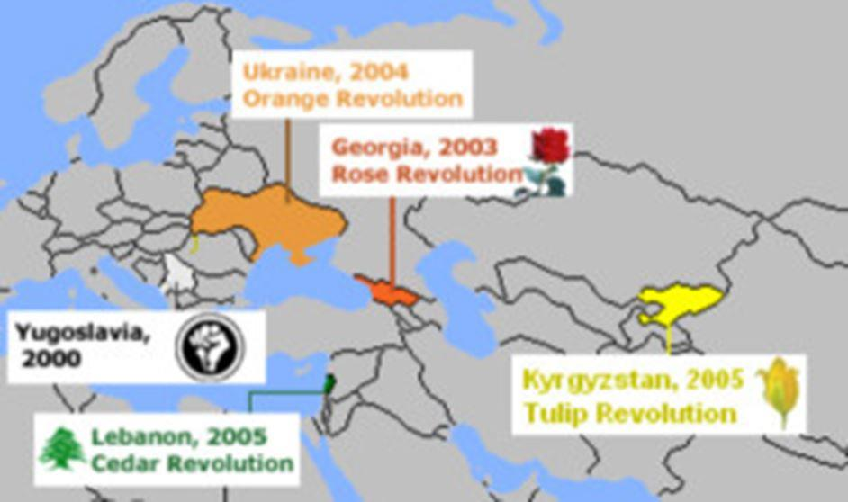

Au moment du triste anniversaire des premiers bombardements de l'Organisation du Traité de l'Atlantique Nord en Serbie, les USA avec leurs laquais occidentaux lancent de nouvelles manœuvres interalliées de l'alliance militaire aux frontières de la Russie, en Géorgie qui depuis la chute de l'URSS est devenue la proie des occidentaux qui y orchestrent une politique russophobe ayant plongé le pays dans deux guerres civiles (1992 et 2008) avec contre les régions d'Abkhazie et d'Ossétie du Sud forcées de faire sécession pour protéger leurs libertés.
L'OTAN, dissimulé comme d'habitude dans le cheval de Troie de rapprochements économiques avec l'Union Européenne a donc débarqué en Géorgie sous le mandat de Saakashvili (2004-2013) et y a engagé un processus d'intégration de ce pays appartenant à cette Transcaucasie convoitée par la « stratégie de containment » occidentale qui depuis le XIXème siècle cherche à réaliser un blocus économique de la Russie en contrôlant ses portes maritimes vers les mers chaudes (par où transitent la grande majorité des matières stratégiques), appliquant l'adage « qui contrôle les mers contrôle la terre » formulé par Walter Raleigh dès le XVIème siècle.
Devant cet élargissement offensif de l'OTAN, Moscou lance depuis plus de 20 ans des avertissements de plus en plus sévères au fur et à mesure que les bases stratégiques de l'OTAN se rapprochent des frontières russes, rappelant la trahison opérée par les occidentaux au moment de la chute de l'URSS, et la métamorphose de l'alliance de défense atlantique en organisation militaro-politique de conquête territoriale.
Ainsi en 2018, évoquant la Géorgie, le Premier ministre russe Dmitri Medvedev avait affirmé qu'« une entrée de la Géorgie dans l'OTAN pourrait provoquer un conflit terrible ».
Malgré cela les occidentaux persistent dans leur hégémonie boulimique et leur russophobie hystérique et maintiennent leur extension de l'OTAN vers l'Est et qui ne peut logiquement mener à court terme qu'à une confrontation ouverte avec la Russie.
Jens Soltenberg, le secrétaire général de l'OTAN à Tbilissi le 25 mars 2019
Ainsi le Secrétaire de l'OTAN, Jens Soltenberg venu assister aux manœuvres de l'alliance auxquelles participent 21 pays (dont les USA, l'Allemagne, la France et le Royaume Uni) a-t-il déclaré le 25 mars à Tbilissi, dans un discours provocateur prononcé à l'occasion d'une conférence de presse avec le 1er ministre géorgien Bakhtadzé :
« Les 29 alliés ont clairement indiqué que la Géorgie deviendrait un membre de l'Otan... Nous allons continuer de travailler ensemble pour préparer l'adhésion de la Géorgie à l’Otan »,
« Nous n'acceptons pas que la Russie ou n'importe quelle autre puissance puisse décider qui peut être membre » de l'OTAN »
Imaginons un instant la réaction des USA si une alliance militaire était signée entre la Russie et le Mexique au vu du caca nerveux que nous fait Washington quand 100 militaires russes arrivent à Caracas pour prêter main forte au gouvernement Maduro menacé par un une tentative de putsch de l'opposition.
Regardons maintenant une carte de l'élargissement de l'OTAN en Europe pour constater, n'en déplaise aux propagandistes occidentaux qui hurlent quotidiennement à l'hégémonie russe que c'est bien l'OTAN qui mène une conquête territoriale vers la Russie depuis la disparition du Pacte de Varsovie, atteignant désormais ses frontières occidentales derrière lesquelles se situent les grands centres névralgiques de la Fédération de Russie.
RAPPEL HISTORIQUE
L'OTAN est une organisation militaire à caractère défensif qui prévoyait une assistance mutuelle des pays occidentaux dans le contexte de la guerre froide entre USA et URSS. Lorsque l'URSS s'effondre en 1990, les anciennes républiques socialistes soviétiques d'Europe deviennent indépendantes, et le Pacte de Varsovie qui était le pendant de l'OTAN est dissous sur la base d'accords réalisés entre Reagan et Gorbatchev mais qui vont être aussitôt trahis par les occidentaux
1990
Lorsque Gorbatchev liquide l'URSS, la question de la réunification allemande est au cœur des pourparlers avec les occidentaux qui se déroulent à Moscou le 9 février 1990 entre James Baker, le secrétaire d’État étasunien et Édouard Chevardnadze, le ministre soviétique des affaires étrangères et Mikhail Gorbatchev le dernier président de l'URSS qui défend le principe d'une Allemagne réunie mais neutre. Le représentant étasunien bataille pour une intégration de Berlin au sein de l'OTAN, en agitant le danger d'une Allemagne nucléaire et indépendante et qu'il est préférable de l'intégrer à l'OTAN. Au cours de ces pourparlers le représentant de la Maison Blanche affirme à trois reprises que « La juridiction militaire actuelle de l’OTAN ne s’étendra pas d’un pouce vers l’Est ».
Le président allemand Helmut Kohl le 10 février rencontre Gorbatchev et confirme la promesse des USA :
« Nous pensons que l’OTAN ne devrait pas élargir sa portée, assure le chancelier d’Allemagne occidentale.
Nous devons trouver une résolution raisonnable. Je comprends bien les intérêts de l’Union soviétique en matière de sécurité. »
À ce stade de l'évolution historique du paysage géopolitique européen, il est question d'un démantèlement des organisations militaires internationales nées de la guerre froide, ce que la Russie va convenir en dissolvant le Pacte de Varsovie. Mais de leur côté les USA tergiversent et trompent une nouvelle fois Moscou en promettant à Gorbatchev le 18 mai 1990 via leur secrétaire d'État Baker que :
« L’OTAN va évoluer pour devenir davantage une organisation politique. (…) et la CSCE (future OSCE), une institution permanente qui deviendrait une pierre angulaire d’une nouvelle Europe. »
On pourrait multiplier les exemples de cette duplicité occidentale orchestrée au moment de l'effondrement de l'URSS, mais resterait totalement incompréhensible la naïveté de Gorbatchev et sa plus grande faute politique de n'avoir pas exiger que soient figées juridiquement ces promesses occidentales sur le papier de traités internationaux.
On connait la suite : les occidentaux conservant le cap idéologique de la guerre froide vont continuer à considérer la Russie comme un ennemi politique, économique et militaire et engager dans sa zone d'influence des ingérences visant à déstabiliser ses partenaires et mener sur leurs territoires une stratégie de préemption économique via l'UE et militaire via l'OTAN. Cette offensive occidentale engagée, profitant des difficultés économiques et de l'instabilité politique des anciennes républiques soviétiques va engager dans un premier temps un programme de "révolutions colorées" qui rapidement vont déboucher sur des cycles d’actions et réactions de plus en plus violentes, et qui vont se traduire par des guerres civiles régionales, une guerre entre la Géorgie et la Russie et dernièrement en Ukraine, le coup d'État du Maïdan et la guerre dans le Donbass.
Et cet expansionnisme de l'OTAN en Europe est également bien sûr à relier aux événements violents qui agitent depuis la même période, sous couvert de combats droitdel'hommistes et antiterroristes, les pays intertropicaux détenteurs de ressources non contrôlées par Washington (« Révolutions arabes » et guerres en Afghanistan, Irak, Libye, Syrie, Mali, Congo, Yemen, etc. sans oublier la crise vénézuélienne organisée par Washington).
Aujourd'hui l'OTAN qui se prétend être le bras armé de l'ONU montre justement la réalité de sa duplicité en bafouant les résolutions de cette dernière comme lorsque Trump récemment reconnait la souveraineté israélienne sur Jérusalem et le Golan, ou que la zone d'exclusion aérienne décidée au-dessus de la Libye est interprétée comme une porte ouverte à une agression illégale d'un pays souverain, entre autres exemples de l'arrogance atlantiste.
Et l'OTAN, aujourd'hui, en surfant sur l'inversion accusatoire de la propagande de guerre étasunienne prétexte de cette nouvelle turbulence internationale créée par Washington pour tomber son masque et relancer une nouvelle guerre froide ouverte contre la Russie, mais cette fois beaucoup plus dangereuse que la précédente car Washington dans une fuite en avant :
Utilise des auxiliaires, idiots utiles ou alliés qui se révèlent souvent incontrôlables comme les djihadistes de Daesh ou le géorgien Saakashvili qui provoque une guerre contre la Russie en 2008.
Métamorphose la confrontation Est-Ouest qui pendant la guerre froide était restée.... froide, en théâtre de conflits régionaux européens de plus en plus violents (Transnisstrie, Haut Karabagh, Ossétie, Abkhazie, Donbass).
Engage des guerres périphériques à cette nouvelle confrontation Est-Ouest et éclatent durablement sur tous les continents provoquant des déséquilibres aux répercussions internationales contraignant Moscou à des engagements militaires exponentiels.
De son côté, Moscou n'a plus le choix car entre autres paramètres :
La Russie subit une relance de la « stratégie du Containment » de son territoire que le statut quo de la 1ère guerre froide avait au moins su gelé, menaçant ses routes stratégiques et énergétiques vitales et menaçant son économie.
La chute des anciennes Républiques socialistes de l'Europe de l'Est dans l'OTAN, a fait disparaître la profondeur stratégique indispensable à la Russie dont les centres vitaux sont désormais à portée des bases étasuniennes.
Depuis 2014, une guerre économique et une guerre contre les russes du Donbass, pousse Moscou vers une escalade de cette confrontation avec les occidentaux et leurs alliés, notamment leurs kamikazes géorgiens et ukrainiens.
Sauf d'assister à un changement de cap miraculeux de la stratégie internationale étasunienne, celui promis par Reagan et espéré par le candidat Trump, nous risquons d'arriver sous peu à un casus belli entre Moscou et la nébuleuse atlantiste qui arrivée sur la ligne rouge tracée par le Kremlin annonce quand même son intention belliqueuse de la franchir.
L'impérialisme étasunien qui considère le Monde comme son domaine colonial ne cesse depuis des années de poser des détonateurs de plus en plus sensibles aux quatre horizons de son terrain de chasse aux matières premières.
Lequel de ces détonateurs va exploser en premier, déclenchant une inévitable réaction en chaîne internationale et violente ? Et l'intégration de la Géorgie ou de l'Ukraine dans l'alliance militaire sous commandement étasunien constituerait sans nul doute un franchissement inacceptable de cette ligne rouge tracée par un Kremlin désormais acculé sur ses frontières.
Aujourd'hui les regards se tournent avec une inquiétude justifiée vers le Donbass, le Venezuela, le Golan, la Géorgie et autres feux allumés par Washington et ses alliés, sans savoir lequel sera l'épicentre du prochain séisme mondial. Ce qui est certain c'est que Moscou ne se fera plus berner par la duplicité mensongère et criminelle des occidentaux et que ces derniers savent que depuis la Géorgie et la Crimée l'ours est désormais réveillé, toutes griffes dehors.
Partager cette page